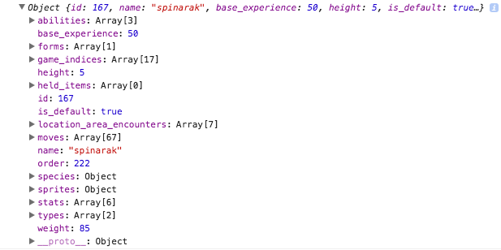

Who Are You Gonna Call?
Now that we know what an API is, we can start talking to the PokeAPI!
The Call
http://pokeapi.co/api/v2/pokemon/167
I know what you're thinking. This looks like a bunch of gibberish, how can I even use this to get my PokeInfo? Well this is where we will break down what this means, how we can manipulate this simple line of code so we can have any pokemon fact at our disposal.
-
Well, we can break it down into three categories, namely:
- "http://pokeapi.co/api/v2" this is the website we will be reaching for our data
- "/pokemon" this is what category of information we will be accessing
- "/167" this is the number of the pokemon we will retrieving
The first part won't ever need to change, because we will always be reaching our trusty PokeAPI website. Section 2 can be a variety of things. The documents on https://pokeapi.co/ show that you can get information about:
- Berries
- Contests
- Encounters
- Evolutions
- Games
- Items
- Moves
- Locations
- POKEMON
- Utility
Lastly, the number will indicate the id of the data you are trying to reach. In our case, we are retrieving number 167 in the Pokedex, which happens to be the pokemon Spinarak!
Receiving the JSON Object
So what happens when we send our call to the API? If you recall our description of an API's functionality, you will remember that when we provide the API with the specific instructions, they will give us the information based on those arguments. This time, we told the API that we wanted a Pokemon (part two of the call) and we wanted Pokemon number 167 (third part of the call). What we get is called a JSON object that looks like this:
Quick Aside: JSON
Some people may be scratching their heads wondering, "what the heck is JSON?" Well not to worry, we will not move on without making sure we got you covered. JSON is an acronym for JavaScript Object Notation. The actual name is not super important, what IS important is knowing what it is for. JSON is a method of exchanging data in a readable and easily navigable fashion. JSON makes use of objects, which are essentially just packages of name value pairs that have information about some entity. In this case, we are receiving an object, or data package, all about our little spider buddy Spinarak. We can expand each category to see more and more information about our entity. Not too long ago, another data exchange format called XML was the norm. It used custom HTML tags to provide the same information JSON does, but it is far less readable than our friendly neighbourhood JSON. Check out this example below. On the left is XML, while on the right is JSON. Which would you prefer to read? JSON? Good. XML? I'm sorry but you might be asked to leave this tutorial (just kidding, kind of).

Makes sense? Great! If not, you can take a quick sojourn to json.org and soak up all the JSON factoids that you could possibly want. All good? Now let's take a quick breather and explore making different API calls. The pokeAPI site has a neat and interactive API caller that let's you try out different calls. We'll put this to use and try a little exercise. Using all of the knowledge you have absorbed, what is the API call to get the evolution of Spinarak. Just remember the three parts to the API call and what ID the next evolution of Spinarak may have. When you think you have it, click on the button to reveal the answer!
https://pokeapi.co/pokemon/168
Alright, well I hope that one was really easy. Now let's try a little harder one. What API call would you need to make if you wanted to learn all about Steel pokemon? You might need to consult the documents at the pokeAPI site to get the answer, but go ahead and give it a go. When you're ready, click on the button to reveal the answer!
https://pokeapi.co/type/9
Recap
Alright, nifty. Now we know what an API call looks like and what we will get back from the website. However, none of this is really exciting until we can actually incorporate it into our website. The good news is, we are going to learn in the next lesson! Before we move on, make sure everything makes sense and consult the pokeAPI or json.org if things are still murky. Now the real fun begins!